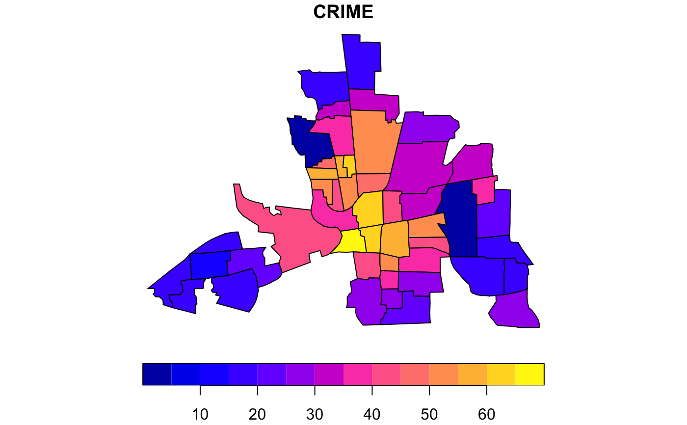

Crime, housing and income data for 49 neighborhoods in Columbus, OH, 1980. Textbook example.
columbus
An sf data frame with 49 rows, 20 variables, and a geometry column:
neighborhood area (computed by ArcView)
neighborhood perimeter (computed by ArcView)
internal polygon ID (generated by ArcView)
internal polygon ID (geneated by ArcView)
neighborhood ID, used in GeoDa User’s Guide and tutorials
neighborhood ID, used in Spatial Econometrics examples
housing value (in $1,000)
household income (in $1,000)
residential burglaries and vehicle thefts per 1000 households
open space (area)
percent housing units without plumbing
distance to CBD
centroid x coordinate (in arbitrary digitizing units)
centroid y coordinate (in arbitrary digitizing units)
north-south indicator variable (North = 1)
other north-south indicator variable (North = 1)
east-west indicator variable (East = 1)
core-periphery indicator variable (Core = 1)
constant (= 1000)
another neighborhood ID variable (NEIG + 1000)
Anselin, Luc (1988). Spatial Econometrics. Boston, Kluwer Academic, Table 12.1, p. 189.
Sf object, unprojected. EPSG 4326: WGS84.
